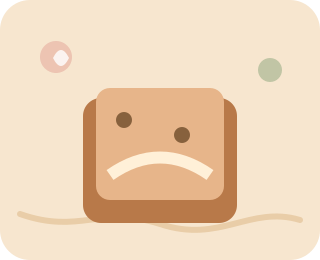

50 años celebrando la mesa chilena
Dulces con historia, hechos como en casa.
Bienvenidos a la mesa de Mil Sabores: repostería árabe y chilena con influencia del sur, inspirada en esas abuelitas que siempre tienen algo recién horneado para convidar.
🫖
“Pase no más, mijito. El té ya está servido.”
Tradición familiar, paciencia y muchas recetas anotadas a mano.

🌿
De Levante a la Patagonia
Sabores árabes, manjar, frutos secos, manzanas y recuerdos del sur.
Los favoritos de la casa
Una vitrina de dulces para acompañar el café, el té o esa visita que llega “por un ratito”.
En esta cocina caben muchas tradiciones
El catálogo conserva las categorías del caso y suma una identidad árabe-chilena sureña.